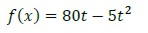
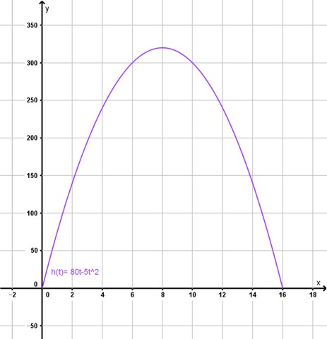
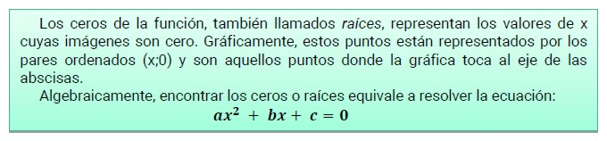
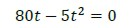
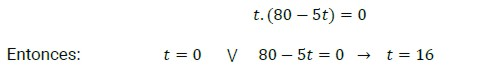

Raíces o ceros de una función cuadrática
¿En qué momento la señal cae al suelo?
Para dar respuesta a esta pregunta partimos de la fórmula de la función y la gráfica del problema:

Encontrar el momento en el que toca el suelo equivale a encontrar el valor del dominio cuya imagen es cero.

En nuestro problema, si observamos la gráfica tenemos dos coordenadas en las que la imagen es igual a cero.
El punto (0,0), que nos indica el punto de partida del disparo, y el punto (16,0), que nos indica el momento en que el destello toca el suelo nuevamente.
A estos puntos se los denomina ceros o raíces de la función cuadrática.

Para nuestro ejemplo, deberemos resolver la siguiente ecuación:

En este caso podemos sacar factor común de t:

Estos valores obtenidos corroboran la gráfica, por lo que podemos dar respuesta a la pregunta diciendo que a los 16 segundos el destello toca el suelo.
Obra publicada con Licencia Creative Commons Reconocimiento Compartir igual 4.0